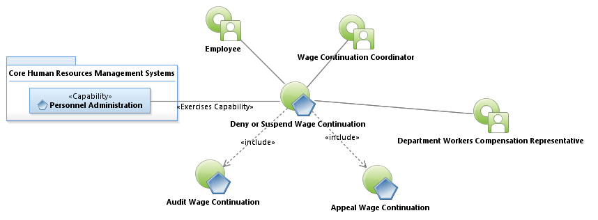
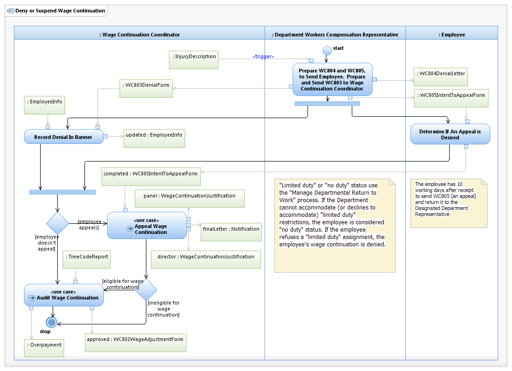

Use Case Model: Deny or Suspend Wage Continuation
Architect: Aaron Brown, IT Enterprise Architect Senior
Date Last Modified: 03/26/2013
User Review: Leslie Milvo, Cindy Steffen, Shelly Sheppard
Date: 3/26/2013
A supervisor has received a report of an injury in the work place. The Wage Continuation coordinator has determine ineligibility of the employee and issues the appropriate notifications and forms to facilitate denial/suspension and appeal.
Follow link to Role Definitions

Use Case Model: Deny or Suspend Wage Continuation
Follow link to Audit Wage Continuation, Appeal Wage Continuation

Activity Model: Deny or Suspend Wage Continuation